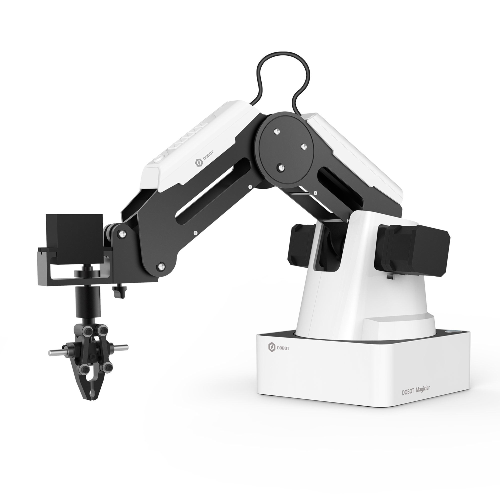

ABOUT ME
Mi nombre es Luis Alejandro Gonzalez, soy un estudiante de 20 años de edad que cursa
la carrera Ingenieria de Sistemas en la universidad Metropolitana de Caracas.
Tengo familia Colombiana, pero nací y crecí en Venezuela.
Me gradué a los 17 años del Colegio Santiago de León de Caracas. Llevo estudiando programación
desde el año 2015 y espero poder seguir
aprendiendo en los próximos años.
Me paso mi tiempo libre leyendo libros, viendo peliculas/series, jugando videojuegos
en mi computador o consola y buceando, cuando la oportunidad se presenta. En particular
me gustán los libros de Stephen King, siendo IT uno de mis favoritos. También disfruto
mucho de peliculas o series animadas de todas partes del mundo, americánas, européas,
japonésas, etc. Además realizo cursos de programacion de diversos temas para
poder tener un conocimiento más amplio acerca de lo que me quiero dedicar en el futuro.
PROYECTOS
Proyecto hecho en C++

Este fue el primer proyecto que realice estando en la UNIMET. Es el juego Space Invaders,
el cual funciona sin ningun problema. El juego mide tu puntaje y se va haciendo más difícil
a medida que el jugador avanza. Al perder o ganar, se muestra en pantalla el puntaje y el
nombre del jugador.
Proyecto hecho en C#

Este fue otro proyecto que realice estando en la UNIMET. Se trata de un programa que
le permite al usuario cargar un archivo CSV con información de clientes y los
organiza utilizando el método de hashing. También permite añadir o eliminar clientes de
la lista. El programa lee el archivo CSV y lo actualiza al cerrar el programa.
Proyecto personal hecho en C#

Este es un proyecto que estoy desarrollando, que trabaja con un equipo llamado Dobot
Magician. Estoy trabajando con una compañía para diseñar un programa en C# para controlar
el brazo robot, para poder utilizarlo en diferentes trabajos.
Estos brazos se van a utilizar para introducir tarjetas de presentacion para imprimirlas,
armar cajas de carton para guardar productos, ayudar en fabricas, etc. Aunque el proyecto no
está terminado, ya puedo controlar al robot eficientemente con el programa.